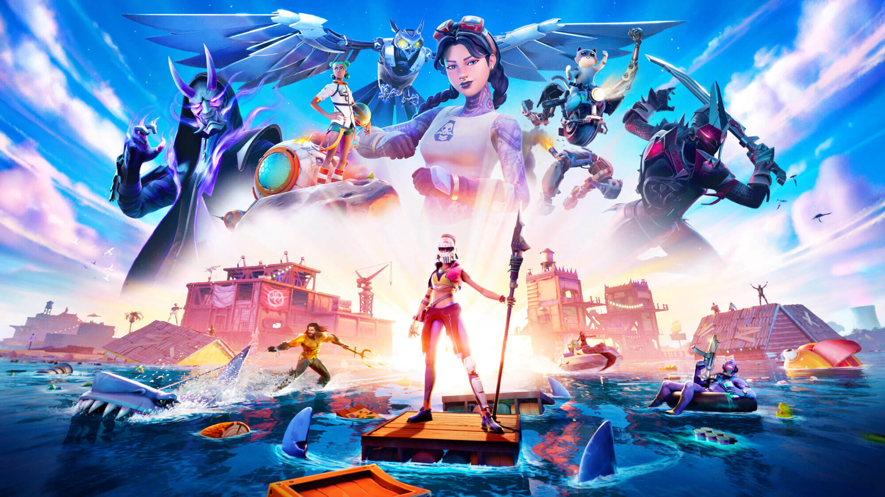

estos son:
- DOOM CLASSIC
- Fortnite 
- Super Mario Bros
- PONG
- Final Fantasy

El DOOM CLASSIC revoluciono el genero 3D que años despues seria el genero dominante, el DOOM fue creado en 1993, es un videojuego de disparos en 1° persona, creado por la compañia estado unidense Id software
Uno de los juegos mas reconocidos y recordados.
El videojuego Fortnite ha revolucionado el genero battle royale, y no solo lo revoluciono, sino lo popularizo, exacto antes del 25 de julio del 2017 el juego mas popular del genero battle royale era el juego Playerunknown’s Battlegrounds, tambien conocido como pubg, este era mas o menos popular.
Ahora, fortnite revoluciono el genero battle royale haciendo que varias compañias hicieran juegos con el mismo estilo, copiandole a veces.

Super Mario Bros, un juego muy pero que muy conocido, Super Mario Bros era antes conocido como jump man en los juegos de Donkey Kong, revouciono el genero de plataformas, fue creado por la empresa Nintendo con gran exito, protagonizo junto con su hermano luigi un sin fin de juegos como: Super Smash Bros, Mario y Luigi super star saga y otros.
El juego PONG no solo fue revolucionario sino que fue unos de los primeros juegos haciendose como uno de los mas conocidos y ustedes se preguntaran. ¿en que revoluciono el juego PONG?, pues yo te lo dire, como el primer juego mas conocido cuando lo obtenias tu veias unos mandos y tu estabas como :O por que nunca los habias visto en ese tiempo y ademas conectado adistintas consolas.

Final fantasy... un juego muy conocido, este juego revoluciono el genero de aventura ademas siendo muy entretenido para muchos y para otros... no. teniendo bastantes entregas fue del 2d al 3d.